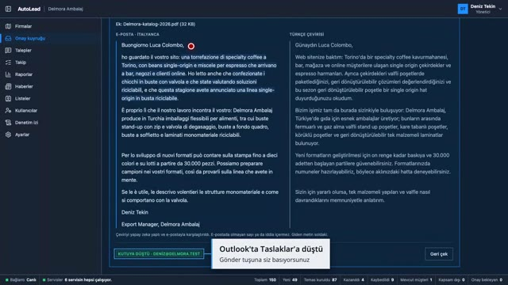
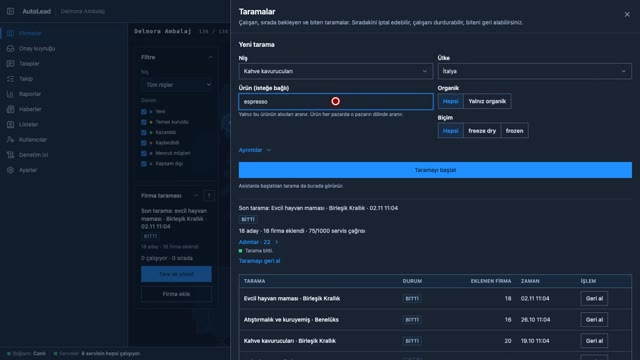
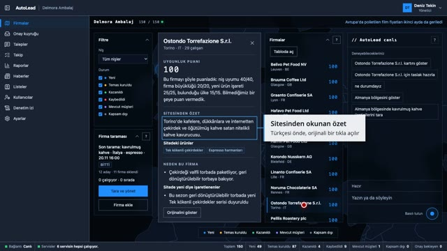
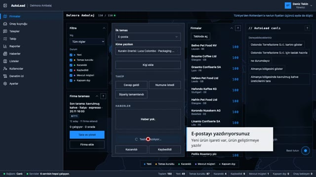
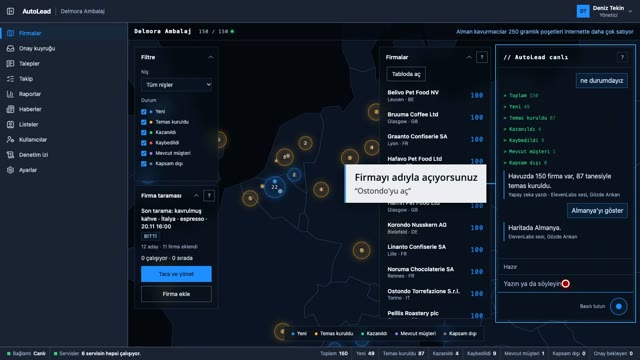
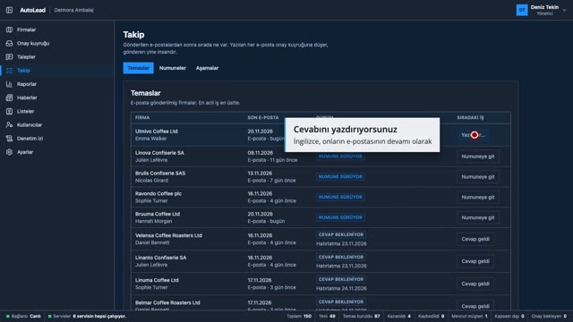
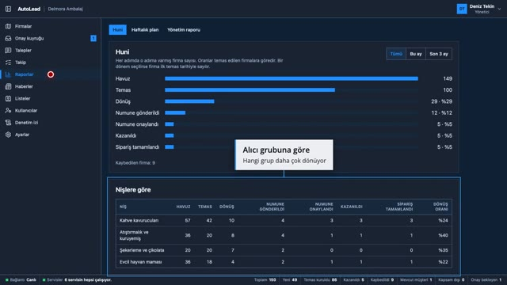
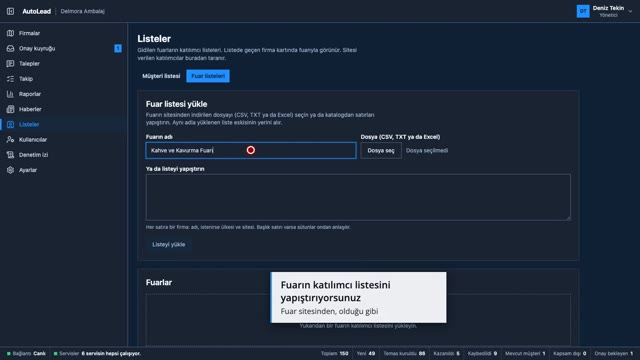
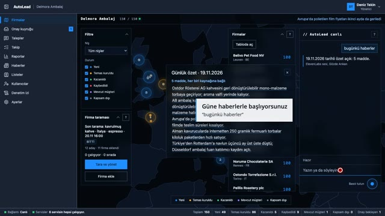
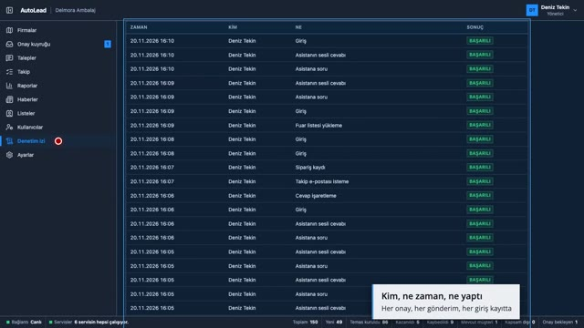

AutoLead · Ambalaj ihracatı
Esnek ambalaj ihracatçısı için yeni alıcı bulma ve takip: tarama, firma kartı, e-posta onayı, asistan, takip, raporlar, fuar listeleri ve haberler. Kurgu bir ihracatçının sekizinci haftası, program canlıda nasıl çalışıyorsa öyle.
Videoları bilgisayarda, büyük ekranda ve tam ekran izlemenizi öneririz.
-

Genel bakış Dokuz konu arka arkaya: yeni pazarda taramadan siparişe. -

Yeni pazarda firma bulmak İtalya'daki kahve kavurucuları espresso ürünüyle daraltılarak taranır, on iki firma haritaya düşer. Müşteri listesinde başka yazılmış olan tanınır ve soğuk e-postaya kapanır. -

Firma kartı: neden bu firma Sitesinden okunan özet Türkçe, yeni ürün işareti, puanın gerekçesi ve doğrulanmış e-postasıyla kişiler tek kartta. -

E-posta: yazdırmak ve onaylamak E-posta İtalyanca yazılır, altında Türkçesi durur. Katalog eklenir, onaylanan e-posta Outlook'ta Taslaklar'a düşer, gönder tuşuna kişi basar. -

Asistan: söyleyerek çalışmak Durum, harita, firma kartı ve haftanın işi asistana sorulur, cevaplar sesli gelir. Ürünün yapmadığı bir iş istenince ne yapabildiğini söyler. -

Takip: cevap, numune, sipariş Gelen cevap kaydedilir, cevabı firmanın kendi dilinde yazdırılır. Numunesi onaylanan firmanın siparişi kaydedilir, firma kazanılır. Aşamalar ve numuneler tek ekranda. -

Raporlar: huni ve yönetim özeti Havuzdan siparişe yedi adımlı huni, alıcı grubuna ve ülkeye göre kırılım, haftalık plan ve tek sayfalık yönetim raporu. -

Fuar katılımcı listeleri Fuar sitesindeki katılımcı listesi yapıştırılır, havuzdaki firmalar işaretlenir, kartta fuar ve stand görünür. -

Sektör haberleri Günün özeti asistanla açılır, her madde kaynağına bağlıdır. Sabahın bülteni üst şeritte: model günün haberlerini tartar, işe dokunanları Türkçe yazar. -

Denetim izi Kimin ne zaman neyi onayladığı, gönderdiği ve kaydettiği tek listede, süzgeçleriyle.
Firmalar, kişiler ve haberler kurgudur. E-postaları, cevapları ve sabah bültenini model yazdı, asistanın sesi ürünün ses servisinden geliyor.
Solv · solv.com.tr